기본 꺼짐
새 서버와 기존 서버 모두 자동 재난 알림을 기본 해제합니다.
ABADDON v11.4.3은 자동 재난 알림을 기본으로 끄고, 관리자가 선택한 서버와 채널에만 표시합니다.
!언어로 표시 언어를 고른 뒤 바로 플레이하세요.
자동 알림은 기본으로 꺼져 있습니다. 관리자가 구독하고 지정한 채널에만 게시합니다.
새 서버와 기존 서버 모두 자동 재난 알림을 기본 해제합니다.
!재난알림 켜기를 실행한 서버만 자동 알림을 받습니다.
!재난채널 #채널로 선택한 곳에만 게시합니다.
!재난알림해제로 구독·자동 발생·채널을 모두 지웁니다.
!재난알림 켜기!재난알림 끄기!재난채널 #채널!재난알림해제!재난알림검수 상세6마리 배당은 새 경주마다 다시 만들어지고, 말을 선택해 출발하면 그 배당으로 끝까지 정산합니다.
!경마를 새로 실행할 때마다 6마리 배당이 달라집니다.
말을 선택한 뒤에는 화면에 보인 배당이 결승까지 유지됩니다.
적중 시 선택한 말의 해당 경주 배당으로 지급하고 손익·현재 잔액을 표시합니다.
말 표식, 공통 결승선, 사진 판정, 음수 잔액과 판돈 상한 없음은 그대로입니다.
!경마 10000!경마장!경마배당검수 상세!테스트 상세!패치노트각 레인에 움직이는 말 표식을 복구하고 모든 체커기 위치를 그대로 맞췄습니다.
말 이름 옆 이모지와 트랙 안의 움직이는 ♞ 표식을 함께 표시합니다.
6개 레인은 같은 길이와 같은 체커기 위치를 사용합니다.
순위·사진 판정·배당·음수 잔액·정산은 바꾸지 않았습니다.
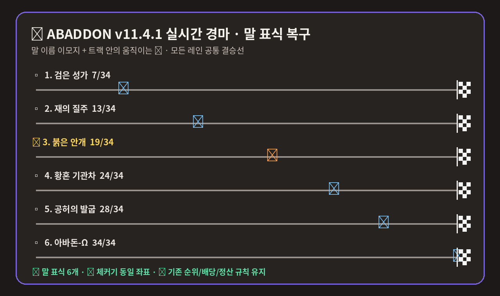
!경마 10000!경마표시검수 상세!테스트 상세!패치노트게임 상태 체크포인트, NPC 딜러, 연합 대항전, 개인 카지노와 6챕터 카드 캠페인을 함께 제공합니다.
45초 체크포인트와 중단 세션 감지로 복구·환불 상태를 더 쉽게 확인합니다.
주간 리그, 시즌 사건, NPC 딜러 6명과 챔피언 테이블을 운영합니다.
게임 승리·순손익·협동 보스 피해·연합 경험치를 합산합니다.
전속 딜러, 이름, 장식, 공개 설정을 저장하고 이미지 카드로 확인합니다.
6개 챕터를 선택·조건·보상으로 진행하며 최후의 테이블에 도전합니다.
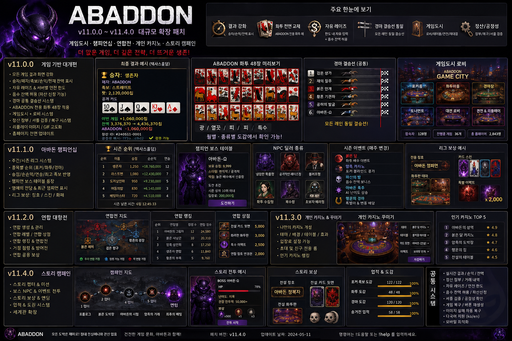
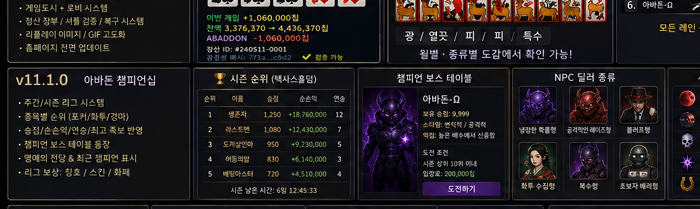
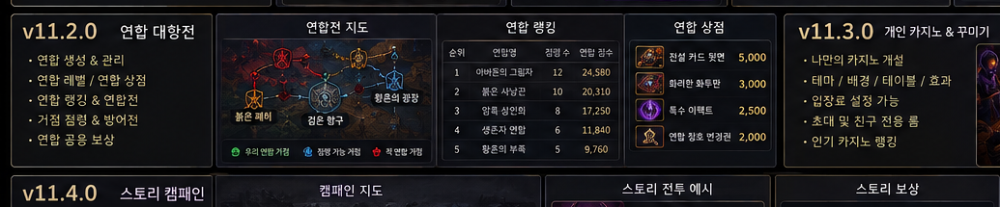
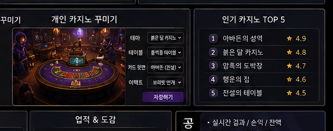
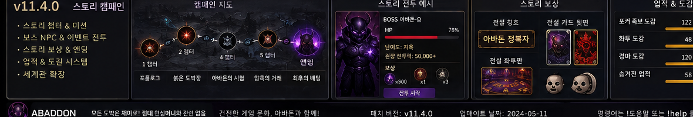
!챔피언십!연합대항전!개인카지노!카드캠페인!1140통합검수 상세승자, 이번 손익, 이전 잔액과 현재 잔액을 모든 실전 카드 결과에 고정 표시합니다.
승자·족보·팟·손익·현재 잔액을 표시합니다.
잔액과 무관하게 입력하고 서버 안전 한도만 적용합니다.
경마 6개 레인의 완주선을 같은 위치로 고정했습니다.
ABADDON 독자 화투 이미지를 게임판과 도감에 적용했습니다.
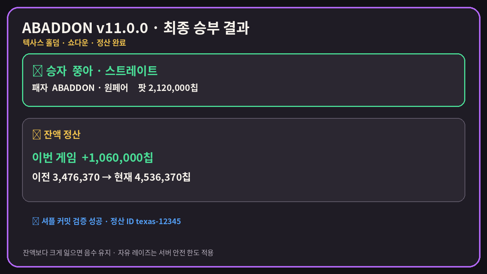
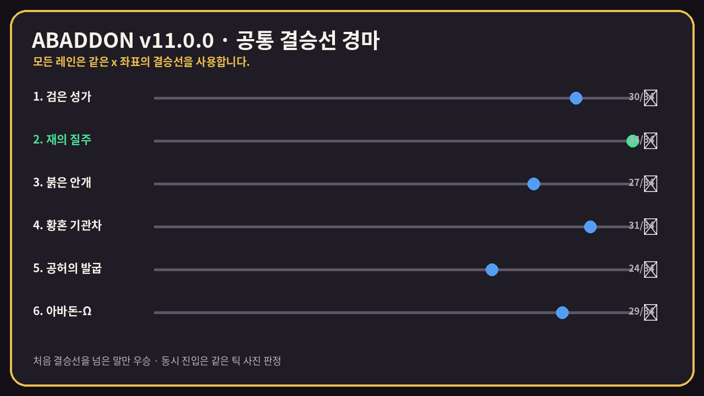
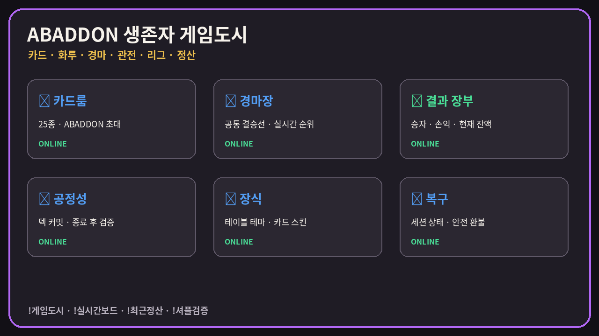
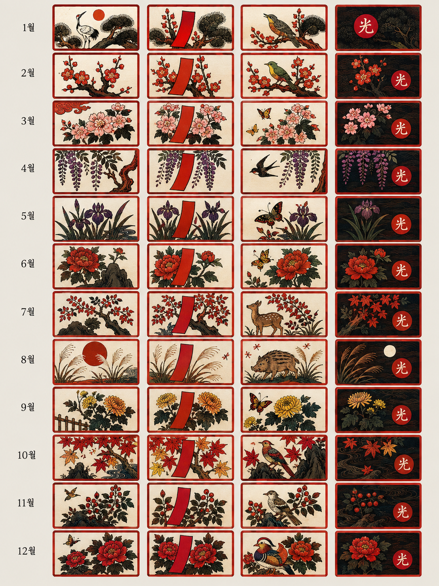
!게임도시!최근정산!셔플검증!화투도감!게임도시검수 상세진행 중에는 짧은 GIF, 종료 후에는 선명한 PNG를 사용합니다.
차례·단계·최근 행동을 움직이는 테이블로 표시합니다.
이미지가 실패해도 임베드로 전환해 게임과 정산을 계속합니다.
최근 공개 행동과 결과를 한 장의 타임라인으로 확인합니다.
진행 중 카드게임과 경마를 한 화면에서 확인합니다.
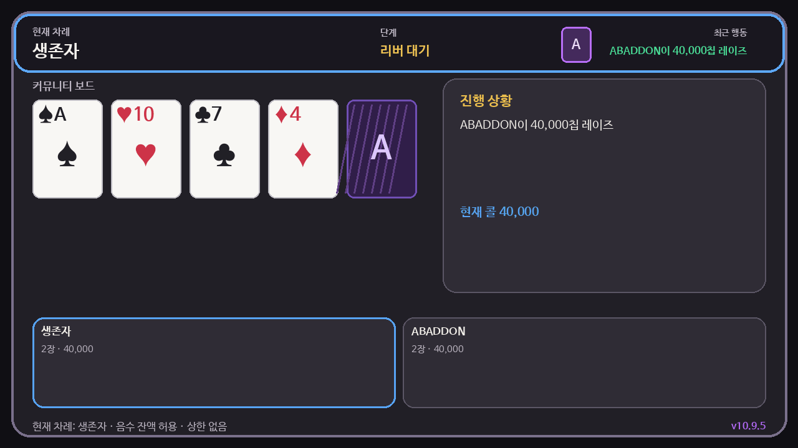
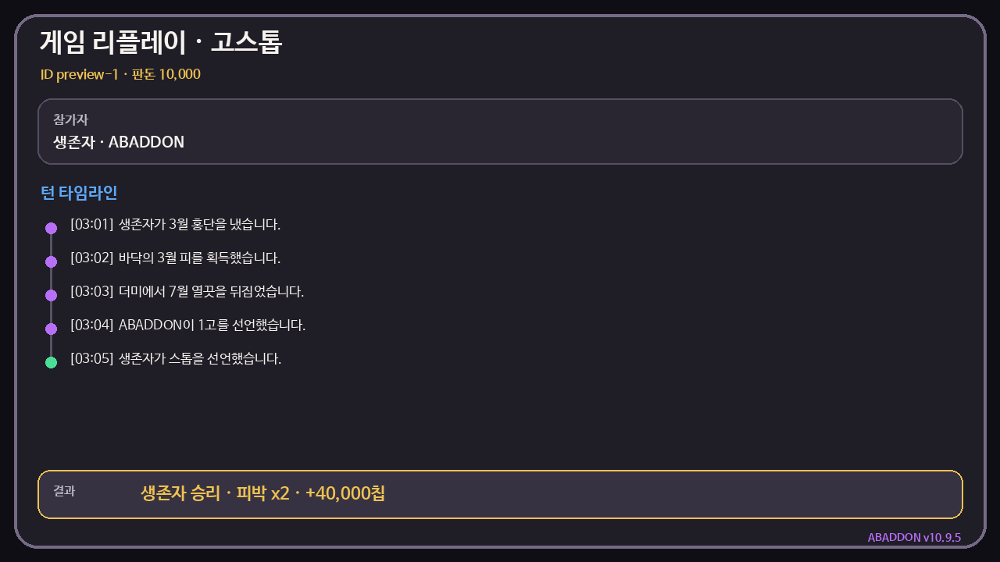
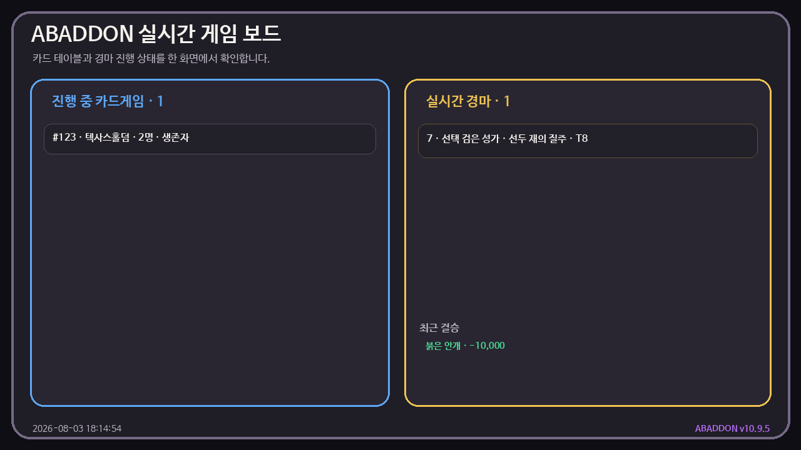
!실시간보드!리플레이이미지!관전!연출검수 상세!테스트 상세긴 설명은 줄이고, 패·차례·팟·점수를 이미지 한 장에 정리했습니다.
패를 내거나 베팅할 때마다 같은 메시지의 게임판이 갱신됩니다.
포커·화투·블랙잭·섯다·원카드·조커잡기의 손패는 본인에게만 PNG로 보입니다.
한글 글꼴 자동 확보, 줄바꿈, 글자 축소와 말줄임으로 깨짐과 잘림을 줄였습니다.
!테스트 상세와 !이미지검수 상세에서 이번 변경만 확인합니다.
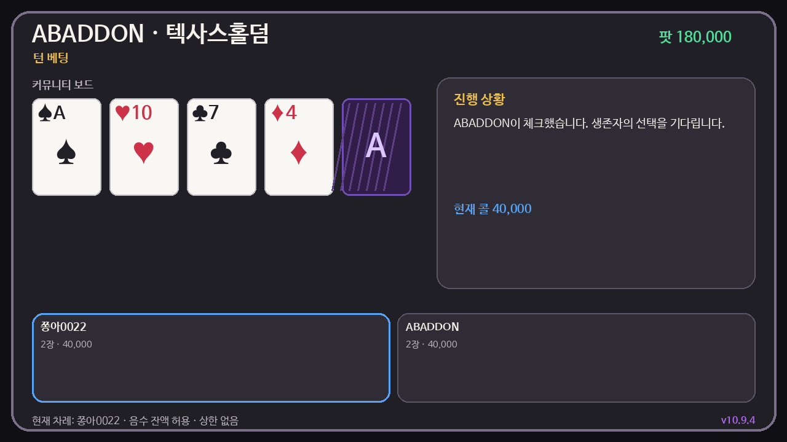
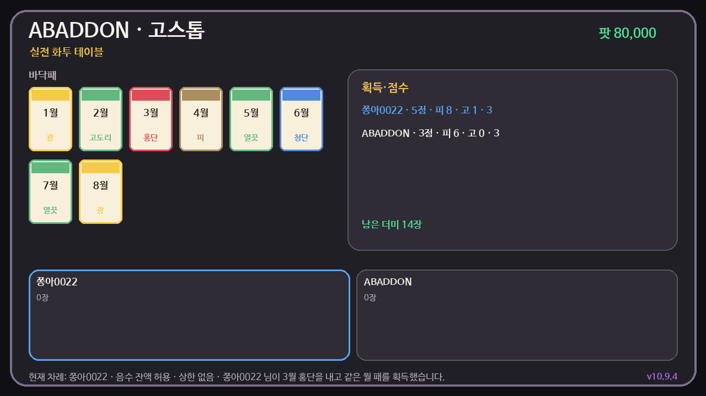
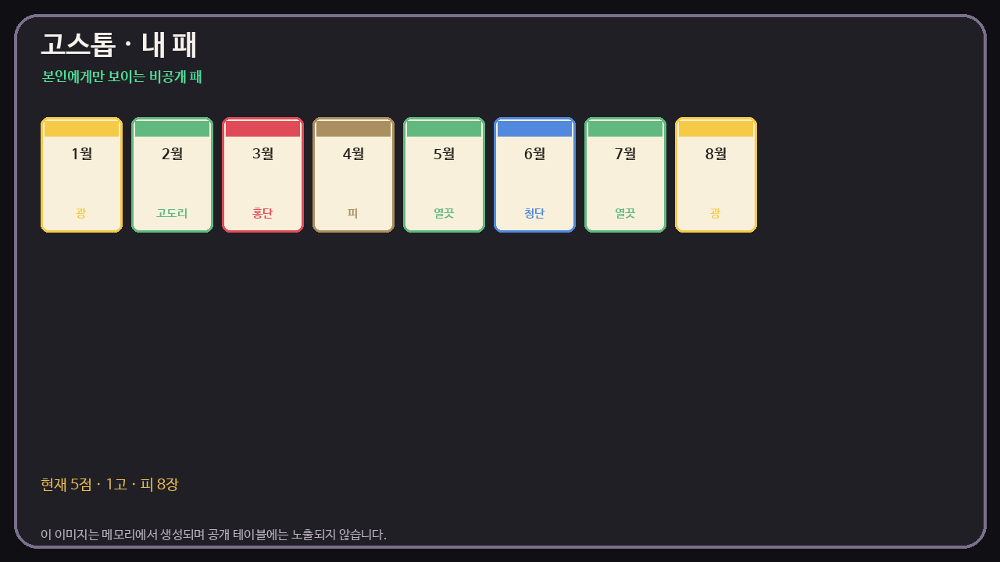
!카드게임!카드대시보드!이미지검수 상세!테스트 상세!패치노트배포 여부를 화면만 보고도 판별할 수 있고, 경마는 메시지 편집으로 순위가 실제로 움직입니다.
!정보와 !생존대시보드가 HP·스태미나·감염·전투력·식량·카지노 칩·펫을 한 장의 이미지로 표시합니다.
!세계지도가 6개 지역의 해금·개척 진행·보스 격파를 연결선과 진행 막대로 보여줍니다.
!카드대시보드에서 전체 종목을 이미지로 보고, 선택 메뉴에서 상세 규칙과 일반 방·ABADDON 대전을 시작합니다.
!경마 10000을 실행하고 말을 고르면 약 1.4초마다 6개 레인이 움직입니다. 결과에는 배당·순손익·게임 전후 잔액이 나옵니다.
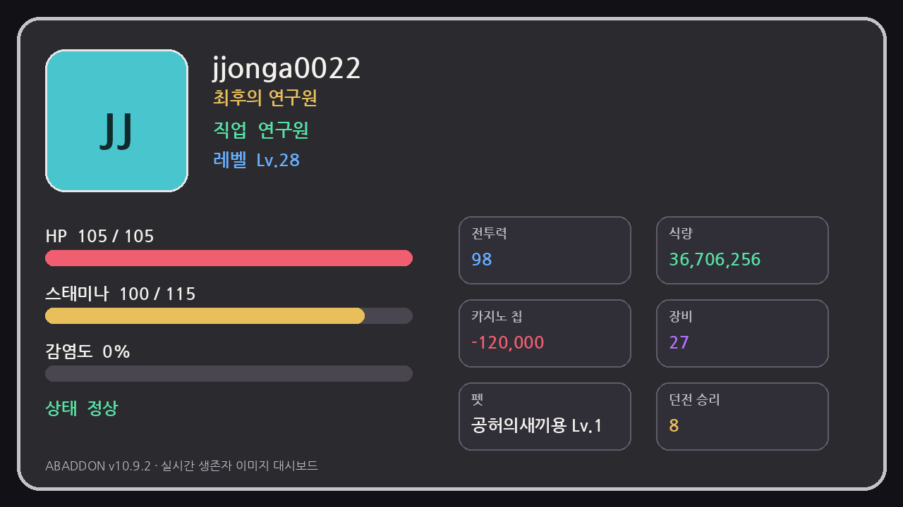
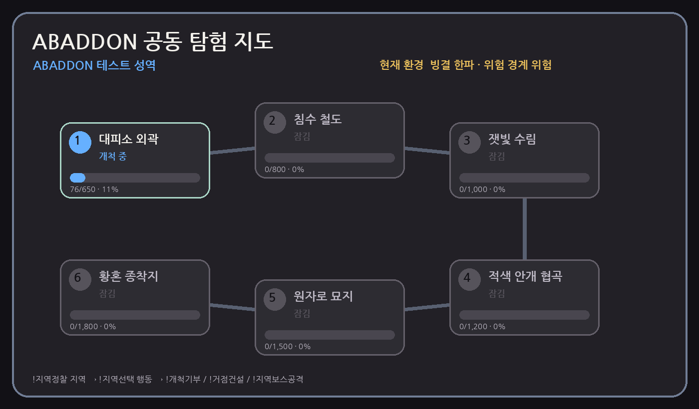
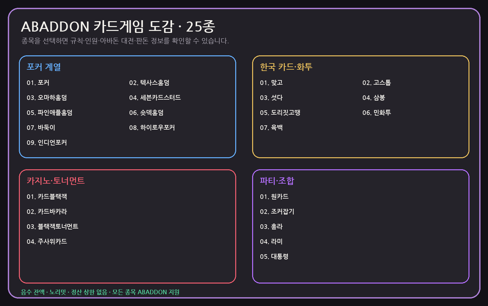
!정보!세계지도!카드대시보드!경마 10000!아바돈초대 경마 10000!테스트 상세각 게임의 실제 흐름을 Discord 버튼·선택 메뉴·비공개 패 화면으로 진행합니다.
손패를 직접 내고 바닥의 같은 월 패를 선택한 뒤 더미를 뒤집습니다. 뻑·쪽·따닥·쓸·폭탄·흔들기와 고/스톱을 처리합니다.
드로우·프리플랍·플랍·턴·리버·스터드 거리마다 체크, 콜, 레이즈, 폴드와 교환을 직접 선택합니다.
첫 장 베팅, 두 번째 장 베팅, 광땡·땡·특수 족보·끗 공개와 구사 재경기를 지원합니다.
잔액 부족으로 게임을 막지 않습니다. 음수 잔액, 노리밋 레이즈, 무제한 화투 배수 정산을 허용하고 파산신청으로 이어집니다.
!카드게임!섯다 10000!카드게임룰!게임진행검수ABADDON은 Discord에서 즐기는 종말 생존 RPG 봇입니다. 캐릭터 성장과 스토리·던전·월드보스, 장비·보물·펫·기지, 생활·거래·카드게임, 서버 리뉴얼·운영 기능을 하나의 인터랙티브 시스템으로 제공합니다.
v10.5.0에서는 선택 언어 하나만 표시하는 구조를 유지하면서 NPC 인연 6명을 영입 가능한 동료로 확장합니다. 텍사스 홀덤·오마하 홀덤·세븐카드 스터드·맞고·고스톱을 추가하고, 명령어·홈페이지·카드 규칙·저장 안전성을 함께 검수합니다.
종말 생존 Discord RPG. 성장·스토리·던전·월드보스·장비·펫·기지·생활·거래·카드게임·서버 리뉴얼을 버튼과 드롭다운으로 즐겨보세요.
게임 로직과 저장 데이터는 하나로 유지하면서 임베드·버튼·드롭다운·모달·오류 안내·공개 패널을 선택 언어에 맞게 렌더링합니다.
개인 응답은 개인 언어, 공개 공동 패널은 서버 기본 언어를 사용합니다.
한국어 명령을 유지하고 모든 prefix 명령에 충돌 없는 영문 접근 이름을 연결합니다.
진행 중 콘텐츠, 미수령 보상, 지역·아이템·인물 기록을 한곳에서 확인합니다.
구조·지원·공동 작전 기록이 주요 생존 인물 6명의 관계 기록으로 이어집니다.
6개 작전에서 역할을 선택하고 공동 진행도·정산·개인 보상을 함께 진행합니다.
메시지를 갱신해 이동 경로와 실제 진행률 게이지가 차오르는 느낌을 제공합니다.
!언어!할일!생존도감!탐사작전!1000안정화검수접속자가 적은 서버를 자동으로 무너뜨리지 않는 안전한 순환과 장기 공동 목표를 도입했습니다. 기존 직업·파티·세계 상태를 복제하지 않고 연결합니다.
6시간 단위, 최대 4회 따라잡기, 72시간 미활동 동결과 세계 붕괴 방지 안전선을 적용합니다.
발전망·식수·야전병원·보급로·통신망·방벽을 버튼 행동과 목표 초과 차감 없는 물자 지원으로 복구합니다.
치안·보급·사기·정화·외교·압박 중 서버가 투표한 방향이 다음 세계 순환에 연결됩니다.
기존 기본 직업 6종을 유지하면서 각 직업에 두 개의 전문화와 복구·분대 연동 역할을 제공합니다.
균형·돌격·방어·구조·정찰 전술과 선봉·의무·기술·정찰 역할로 협동 작전을 수행합니다.
새 조직을 만들지 않고 기존 파티를 재사용하며, 동시 실행·초과 차감·보상 중복과 재접속 상태를 보호합니다.
!세계순환!복구작전!세계지령!전문화!분대전술!분대작전!920안정화검수사용자 길드와 별개인 NPC 세력 관계를 쌓고, 지역 호송과 서버 공동 전쟁에 참여하며, 시즌 5의 선택으로 세계 지표와 결말을 변화시킵니다.
우호 세력 6종과 평판 5단계, 일일 의뢰, 세력 증표 교환과 거점 교류를 제공합니다.
공동 지도 지역을 잇는 5개 노선에서 화물을 적재하고 선봉·정비·의무·교섭 역할로 호송합니다.
구조·방어·복구 전선을 선택하고 버튼 행동과 자원 기부로 적대 세력에 맞섭니다.
4개 장, 장당 3개 선택과 4종 결말. 서버의 안정도·보급·사기·오염이 결말을 결정합니다.
접촉 대상에 따라 행동 이름과 결과가 달라집니다. 같은 메시지의 이모지 위치와 진행 막대를 갱신해 출발·탐지·판단·회수 흐름이 움직이는 것처럼 보이게 만들었습니다.
감염체·약탈자뿐 아니라 붕괴·독성 누출·구조 신호·봉인실·실종 보급대·중립 상인까지 다양한 현장을 만납니다.
백색등 구조대, 푸른 방패 민병대, 새벽 의무단, 철도 복구단, 보급 호위대, 황무지 정찰대가 등장합니다.
적대 접촉은 맞서기·우회, 우호 접촉은 합류·지원·공동 수색, 위험 설비는 돌파·안정화·원인 조사로 바뀝니다.
🚪 출발에서 🗺️ 이동, 📡 탐지, ⚠️ 판단, 📦 회수, 🏠 복귀까지 한 메시지를 여러 프레임으로 갱신합니다.
직접 발견한 접촉 대상만 기록하며 우호 세력과 구조 요청, 위험·발견 기록을 분류해 보여줍니다.
최근 접촉 4종의 연속 반복을 완화하고 구버전 인덱스 저장과 신규 키 저장을 모두 복구합니다.
!파밍!파밍출발!파밍선택!파밍인카운트도감!811안정화검수!테스트 상세기존 파밍·원정·길드 파견을 복제하지 않습니다. 지역 정찰은 개인 선택, 개척도와 거점·보스는 서버 공동 진행으로 역할을 분리했습니다.
진행 중 정찰과 재난, 지도 개방 상태를 먼저 보여주고 기존 게임센터·파밍·길드·미니게임으로 연결합니다.
대피소 외곽·침수 철도·잿빛 수림·적색 안개 협곡·원자로 묘지·황혼 종착지를 순차 해금합니다.
안전 경로·신호 추적·위험 돌파 중 하나를 고릅니다. 진행 중 사건은 저장되어 재접속 뒤 명령으로 복구됩니다.
감시탑·정화소·보급소를 자원으로 건설해 정찰 안정성, 오염 대응과 회수 보정을 높입니다.
개척도를 채우면 지역 보스가 출현하고, 공동 격파 후 다음 지역과 기여 보상이 열립니다.
길드·사용자 잠금, 정찰 사건 ID, 보스 보상 수령 기록, 오류 사건 조회와 INFO 로그 등급을 적용했습니다.
!단말기!세계지도!지역정찰!개척기부!거점건설!지역보스공격!오류조회!810안정화검수기존 문의·통계·알림 기능을 복제하지 않고 통합 진입점에서 재사용합니다. 공동 재난은 자동 일정, 환경 기상과 버튼 참여를 결합합니다.
정전·오염·감염·붕괴·봉쇄·드론·원자로 누출 등에 산성비·폭풍·한파·방사성 비구름 같은 환경이 결합됩니다.
정찰·구조·수리·방어 버튼과 물자 지원 모달로 참여합니다. 진행과 보상은 잠금과 고유 기록으로 한 번만 반영됩니다.
패치·재난·기상·길드·시장 알림을 한 메뉴에서 고르고 문의·점검·통계·건의 진입점을 운영 허브에 묶습니다.
생성 로비 입장 시 개인 분대방이 열리고 방장·잠금·초대·인원 제한을 관리하며 빈 방은 자동 정리됩니다.
메시지와 사용자 우클릭 10종, 반응 기반 하이라이트 보드로 신고·정보·커뮤니티 기록 접근을 단축합니다.
!테스트 상세와 !790안정화검수는 v7.9 변경 범위만 검사하고 임베드 필드 25개 제한을 지킵니다.
!운영통합센터!재난상황!재난예보!알림센터!건의!분대음성설정!하이라이트설정!790안정화검수공동 재난은 개인 파밍·길드 파견과 분리된 서버 전체 목표입니다. 역할 행동과 물자 납품을 합산하고 모든 보상은 고유 기록으로 한 번만 처리합니다.
대규모 정전·식수 오염·감염체 습격·통신망 붕괴·대피소 화재·독성 안개에 서버 전체가 대응합니다.
정찰·구조·수리·방어 임무를 수행하거나 현재 필요한 물자를 납품해 공동 진행도를 올립니다.
참여 기록·기여도 순위·개인 수령 상태를 저장하며 연타·동시 수령·재접속에서도 한 번만 정산합니다.
🚪 출발 → 🗺️ 이동 → 📡 탐색 → ⚠️ 위험 또는 ✨ 발견 → 📦 회수 → 🏠 복귀 흐름을 단계별로 표시합니다.
!테스트 상세는 앞으로 직전 패치에서 추가되거나 수정된 기능만 읽기 전용으로 점검합니다.
!시스템점검의 시간 참조 오류와 상세 테스트 구현 누락을 수정하고 정상 상태 로그를 정보 수준으로 정리합니다.
!재난상황!재난임무!재난참여!재난납품!재난기여도!재난보상!재난버프!780안정화검수!테스트 상세기존 채집을 복제하지 않고 지역 선택·랜덤 인카운트·폐품 처리·신호 해독·일일 납품·생활 연구가 이어지는 독립 생활 루프를 추가했습니다.
버려진 대형마트·붕괴 주거구역·지하 화물역·흑색 격리구역에서 레벨과 위험도에 맞는 회수 작전을 선택합니다.
전투·회피·구조·추가 탐색 중 하나를 고릅니다. 재접속 뒤에도 명령으로 이어갈 수 있고 결과는 한 번만 정산됩니다.
식량·생활 재료·보물 파편·미감정 보물·미감정 폐품을 회수하고 감정소와 공방으로 이어서 처리합니다.
폐품을 감정한 뒤 재료로 분해하거나 완제품으로 수리합니다. 기존 무기 수리와는 별개의 생활 콘텐츠입니다.
신호 퍼즐과 매일 바뀌는 납품 계약으로 연구 자료를 모아 현장 배급·폐품 회수·신호·계약 기술을 해금합니다.
채집·광산·벌목·굴착·길드 파견과 역할을 분리하고 사용자별 잠금·고유 ID·재접속 복구를 검사했습니다.
!파밍!파밍출발!파밍선택!공방!전파탐색!의뢰게시판!연구소!770안정화검수삭제 없이 중복 기능을 감사하고 스토리 시즌 해금 규칙과 관리자 점검 권한을 안정적으로 적용했습니다.
검은 주파수 엔딩을 1회 완료하면 백색 방주가 열립니다.
시즌 1 → 2 → 3 → 4 순서로 진행하며 !시즌여정에서 잠금 상태를 확인합니다.
서버 관리자와 봇 소유자는 시즌 완료 조건과 관계없이 모든 시즌을 실행할 수 있습니다.
패치 전에 시즌 2~4를 이미 시작한 생존자는 진행이 잠기거나 초기화되지 않습니다.
명령어·환영 설정·채널 안내·게임 진입점을 읽기 전용으로 검사합니다.
이번 패치의 삭제는 0건입니다. 폐기 후보는 먼저 보고하고 승인 전까지 그대로 유지합니다.
!시즌여정!스토리해금!중복검수!안정화검수!폐기후보서버 메뉴 이름을 읽어 전용 안내문을 만들고, 다시 실행해도 같은 메시지만 최신화합니다.
공지·규칙·가입·작전·RPG·거래·도박·무전·운영 공간을 이름별로 구분합니다.
!채널가이드 전체설치 한 번으로 메뉴와 일치하는 채널을 찾아 순서대로 고정합니다.
아바돈이 올린 기존 메시지를 찾아 편집하므로 패치 때마다 안내문이 쌓이지 않습니다.
공용 무전·분대 통신·음성 I·II·무전 대기의 채팅 안내도 지원 가능한 환경에서 고정합니다.
현재 채널의 자동 추천을 확인하고 설치 상태·갱신 결과를 관리자 화면에서 점검합니다.
권한을 먼저 검사하고 채널 사이 간격을 두며 API 오류가 발생하면 작업을 안전하게 멈춥니다.
!채널가이드 전체설치!채널규칙 자동!채널규칙 상태!채널규칙 갱신!채널규칙 일괄상태입장 환영·신규 역할·패치 공지·미니게임 대기 흐름을 한 번에 정리했습니다.
공지·규칙·가입 안내와 선택형 테마, 시작 버튼을 하나의 메시지에 담습니다.
기존 자동 역할과 새싹 역할을 하나로 연결하고 임시·영구 모드를 선택합니다.
지정 채널에 새 버전 내용을 버전당 한 번만 올려 재부팅 도배를 막습니다.
가위바위보·홀짝·숫자·포커·원카드·조커·신호 예측 7종을 제공합니다.
생존자 레이스와 카드게임 모집방에서 사람이 부족하면 아바돈을 초대합니다.
명령 별칭, 중복 리스너, 저장·정산, 드롭다운 제한과 배포 ZIP을 다시 검사했습니다.
!패치채널!패치자동공지 켜기!아바돈게임!아바돈초대 포커!아바돈전적!새싹설정 역할모드 임시v7.1.2에서 추가된 테마 선택 기능은 통합 환영 카드 안에서 그대로 유지됩니다.
초록빛 새싹·행운·정원 분위기의 포근한 기본 환영 테마입니다.
꽃잎·리본·달콤한 인사로 서버의 첫인사를 화사하게 만듭니다.
푸른 버블과 부드러운 문구로 긴장을 풀어주는 차분한 테마입니다.
달·별·항법 신호 분위기로 새 멤버를 탐험대원처럼 맞이합니다.
발자국·고양이·여우 이모지로 귀엽고 친근한 환영을 제공합니다.
폐허 통신·오염 경보·보급 지침을 사용하는 ABADDON 전용 종말 테마입니다.
!환영테마!환영테마 아포칼립스!환영테마 미리보기!새싹설정 테마 벚꽃!귀여운메뉴!새싹설정기존 콘텐츠를 새로 갈아엎지 않고 출석·퀘스트·생활·전투·성장·월드보스를 이모지 작전 보드로 연결했습니다.
6개 목표 중 5개를 완료하면 일일 루프가 완주됩니다. 다음 추천 명령도 바로 표시합니다.
⬜ 시작 전, 🟨 진행 중, ✅ 완료, 🎁 수령 가능, 🔒 잠금 상태를 같은 규칙으로 표시합니다.
일일 루프 연속 기록과 최고 기록을 보존하고 연속 일수에 따라 일일 보상이 증가합니다.
생활·전투·성장 활동으로 참여 점수를 쌓고 단계별 식량·인장·칭호를 받습니다.
레이드·생활·탐색용 장비 구성을 최대 3개 저장하고 명령 한 번으로 적용합니다.
보스가 바뀌어도 주차별 누적 피해와 공격 횟수를 합산하고 지난주 순위 보상을 지급합니다.
!오늘할일!성장보드!미션보상!누적보상!장비프리셋!월드보스주간랭킹!월드보스주간보상!복귀보급새 콘텐츠를 안전하게 확장할 수 있도록 저장·백업·복구·오류 추적 기반을 강화했습니다. 일반 이용 방식은 바뀌지 않습니다.
임시 파일을 완전히 기록하고 JSON 구조를 다시 확인한 뒤 주 데이터와 교체합니다.
시작 시와 일정 저장 횟수마다 정상 스냅샷을 남기고 최근 30개를 보존합니다.
주 파일이 손상되면 직전 .bak과 최근 정상 회전 백업을 순서대로 탐색합니다.
한 사용자의 명령을 순차 처리해 연속 클릭에 따른 중복 차감과 중복 보상 위험을 완화합니다.
오류 사건 번호와 명령·길드·오류 종류를 기록해 신고 내용을 빠르게 찾습니다.
명령별 실행·성공·실패·평균 처리시간을 확인해 실제 이용 데이터를 기반으로 개선합니다.
!시스템점검!오류현황!운영통계!백업목록!백업생성!백업검증!복구미리보기처음 시작·오늘 추천·목적별 기능군과 대표/전체 검색을 추가했습니다. 세부 명령어는 유지하면서 진입점만 단순하게 만들었습니다.
정보 확인부터 직업·출석·장비·첫 전투까지 5단계로 안내합니다.
카테고리 → 기능군 → 실행 항목으로 이동하며 오늘 추천과 즐겨찾기를 제공합니다.
대표 명령만 먼저 보고, 필요할 때 전체 목록이나 자연어 검색을 펼칩니다.
성장·전투·돈벌이·스토리·함께하기 중 원하는 목적부터 선택합니다.
월드보스·카지노·스토리·알림·서버 관리의 유사 명령을 대표 메뉴 아래 묶습니다.
기존 한국어 명령과 v6.5.4 영어 별칭은 삭제하지 않아 이전 안내도 계속 작동합니다.
신규 키 아트만 교체한 것이 아닙니다. 보상 유실 방지, 실전·테스트 분리, 약점 계산, 네 단계 페이즈, 부위 파괴와 반격을 실제 전투 로직으로 연결했습니다.

약점: 장착 무기 강화 +5 이상. 봉인 장갑과 핵을 파괴하면 방어 체계가 약화됩니다.

약점: 기술자 직업과 방호 장비. 원자로와 냉각 계통을 파괴해 회복과 방어를 차단합니다.

약점: 화염 장비와 치명타. 감각 기관과 촉수를 파괴하면 회피와 반격이 약화됩니다.

약점: 보유 광석·고철. 포대와 수리 드론을 파괴해 공격과 자가 복구를 봉쇄합니다.

약점: 시즌 2 기록과 원정 유물. 기억 결정과 환영을 파괴하면 회피 기믹이 무너집니다.

약점: 참가 직업 역할 다양성. 왕관과 날개를 파괴해 최종 광폭화 반격을 억제합니다.
새 보스가 소환돼도 이전 처치 전투를 보관하며 오래된 미수령 보상부터 지급합니다.
테스트 공격은 식량·내구도·도감·실전 통계와 보상을 변경하지 않습니다.
직업·장비·강화·자원·스토리 기록·유물·역할 다양성이 피해량을 바꿉니다.
탐색·적응·붕괴·광폭화 단계별 방어·회피·패턴·반격 수치가 달라집니다.
부위별로 방어·회피·회복·환영·반격률·반격 피해에 서로 다른 효과를 줍니다.
실전 반격 적중 시 소량의 식량 손실이 발생하고 테스트에서는 예상값만 표시합니다.
!월드보스!월드보스공격!월드보스보상!월드보스보상목록!월드보스이력!월드보스테스트상태!월드보스테스트공격기존 생존 테마는 그대로 유지하고 깔끔 고딕·화사한 자연·모던 판타지 테마를 추가했습니다. 이미지를 쓰지 않고 색상·이모지·문구만 바꾸므로 가볍고 안전합니다.
!서버테마!서버테마 화사!서버테마미리보기 깔끔고딕!서버테마설정 벚꽃정원참가 버튼, 시작 시 참가비 차감, 채널별 한 게임 제한, 비공개 패 확인, 중복 정산 방지와 시간 초과 전원 환불을 유지합니다.
아포칼립스 12종, 깔끔·고딕 4종, 화사·자연 6종, 모던·판타지 6종을 분류→테마 2단 드롭다운으로 선택합니다.
서버 브리핑, 이벤트 채널, 개인 알림, 백업, 복구, 429 상태와 안전 자동 진행을 하나의 제어실에서 확인합니다.
2~6명이 참가해 비공개 5장을 확인하고 한 장을 한 번 교환한 뒤 족보를 공개합니다.
2~6명 턴제 게임입니다. 같은 무늬·숫자를 내고 2·J·A·조커 특수 효과를 사용합니다.
2~8명이 참가해 같은 숫자 짝을 자동 제거하고 옆 사람 패에서 한 장씩 뽑습니다.
참가비는 시작할 때만 차감합니다. 모집 취소는 미차감, 진행 시간 초과는 전원 환불, 재시작 잔존 예약은 자동 복구합니다.
!카드게임!포커!텍사스홀덤!오마하홀덤!세븐카드스터드!맞고!고스톱!원카드!조커잡기기존 원정·레이드·카지노와 겹치지 않도록 작전 중 획득물만 위험에 노출되는 별도 PvPvE 구조로 설계했습니다.
진입 비용을 내고 파밍한 뒤 3분 동안 탈출 위치가 공개됩니다. 습격당해도 기존 인벤토리와 장착 장비는 안전합니다.
10분 동안 공개 운반을 버티면 계약 화물 가치의 2배를 우편으로 정산합니다. 실패해도 계약 화물만 잃습니다.
서버별 하루 1~2회, 10분 동안 생활 획득량 2배와 희귀 발견 보정을 제공합니다. 이벤트당 한 번 보급선 수색이 가능합니다.
잉여 나무·광석·고철과 비장착 저등급 장비를 칩·강화석·극저확률 상위 장비로 재활용합니다.
시간형 작전 정산과 서버 이벤트 보상을 !우편함에서 확인하고 !받기 all로 한 번에 수령합니다.
날씨·보급선·밀수품 알림을 DM·멘션·둘 다 중에서 선택합니다. 서버 관리자는 공개 이벤트 채널을 지정할 수 있습니다.
새 기능은 특수 작전 / 서버 이벤트 최상위 드롭다운과 상점·서버 관련 카테고리에 중복 없이 정렬됩니다.
이 버전의 회귀 항목은 전용 안정화 명령으로 보존하며, 현재 !테스트 상세는 최신 패치 범위만 검사합니다.
!다크존!다크존진입!다크존탐색!다크존탈출!밀수품운반!보급선!고철갈갈이!우편함!알림설정!테스트 상세기존 슬롯·룰렛·PVP·랜덤박스와 같은 기능을 복제하지 않고, 현금화 타이밍·협동 실패·투표 숙청·옵트인 위험이라는 별도 규칙으로 구성했습니다.
배당이 실시간으로 오르는 동안 탈출 버튼을 눌러야 합니다. 충돌 전에 현금화하지 못하면 판돈을 전부 잃습니다.
움직이는 게이지가 좁은 목표 구간을 지날 때 수신합니다. 오차에 따라 0·2·4·8배로 정산됩니다.
Discord 버튼 제한을 지키는 20칸 지뢰 게임입니다. 안전 칸을 열수록 배당이 오르고 언제든 도망칠 수 있습니다.
3~8명이 참가비를 모으고 라운드마다 탈락자를 투표합니다. 최후의 1명이 수수료를 제외한 상금을 가져갑니다.
3~4명이 공동 참가비를 내고 4개의 보안 관문을 연속 통과합니다. 한 번의 오답으로 전원이 실패합니다.
괴수 투기장과 영혼 결투는 상대 수락 후 진행합니다. 생물 테러도 대상이 옵트인한 경우에만 작동합니다.
하루 1개, 높은 식량 비용, 개인 천장과 서버 주간 한정 전리품을 사용하는 후반용 상자입니다.
이전 버전의 전체 회귀 검사는 버전별 안정화 명령으로 분리하고, 현재 !테스트 상세는 최신 변경 사항만 검사합니다.
!괴질탈출!비상주파수!지뢰찾기!돌연변이경주!오염문!비상보급상자!선물거래!벙커개설!금고개설!영혼결투!테스트 상세기존 레이드·원정·암시장·카지노 기능과 역할이 겹치지 않도록 중복을 먼저 확인하고, 짧게 반복할 수 있는 환경·정비·일일 이벤트를 별도로 추가했습니다.
하루를 2~5시간 구간으로 나누고 서버별로 불규칙하게 변경됩니다. 같은 날씨가 연속으로 나오지 않습니다.
주파수 동기화·좌표 역산·긴급 응답 중 하나를 선택합니다. 날씨 구간이 바뀌면 새 신호가 생성됩니다.
전투와 위험 탐색으로 내구도가 감소합니다. 수리 키트와 6종 파츠로 자신만의 무기를 관리합니다.
날씨 구간마다 낮은 확률로 등장하는 칩 전용 상인입니다. 수리품·개조 부품·자원·희귀 장비를 제한 판매합니다.
매일 한 지역이 고위험·고보상 구역으로 지정됩니다. 실패 위험과 피해가 커지는 대신 보상 배율도 크게 상승합니다.
행운의 아이템·음식·방향과 작은 전투·생활·시장 보정을 확인합니다. 첫 확인에는 소액 생존 보상이 지급됩니다.
식량을 지불해 하루 최대 3회 개봉합니다. 장비·파츠·수리 키트·자원·재료·부분 환급이 나옵니다.
!테스트는 명령 등록·날씨 엔진·내구도·카지노 이미지 제거·전투 후크를 재화 변경 없이 점검합니다.
!날씨!무전!위험구역!오늘의 운세!내구도!개조목록!까마귀!랜덤박스!테스트기존 기지 방어·자원 시장·RPG·스토리·던전 전술 전투는 유지하고, 이번 환경·정비 기능이 해당 시스템의 보상과 위험에 보조적으로 연결됩니다.
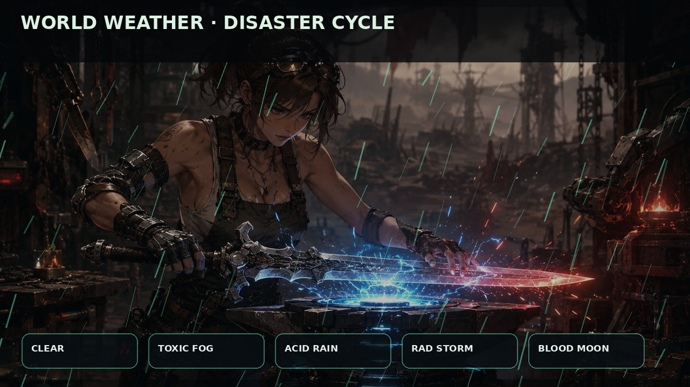
2~5시간 사이의 불규칙한 환경 구간이 생활 획득량·사고율·던전 전투 효율과 희귀 결과에 소폭 영향을 줍니다.

개인 기지 레벨과 장비 전투력을 합산하는 주간 서버 협동전입니다. 고화질 전장 원본으로 교체하고 기존 레이드와 보상 구조를 분리했습니다.

나무·광석·고철을 식량으로 사고팔며 수요와 공급에 따라 가격이 변합니다. 시장 전용 고화질 원본과 카지노 칩 교환을 지원합니다.
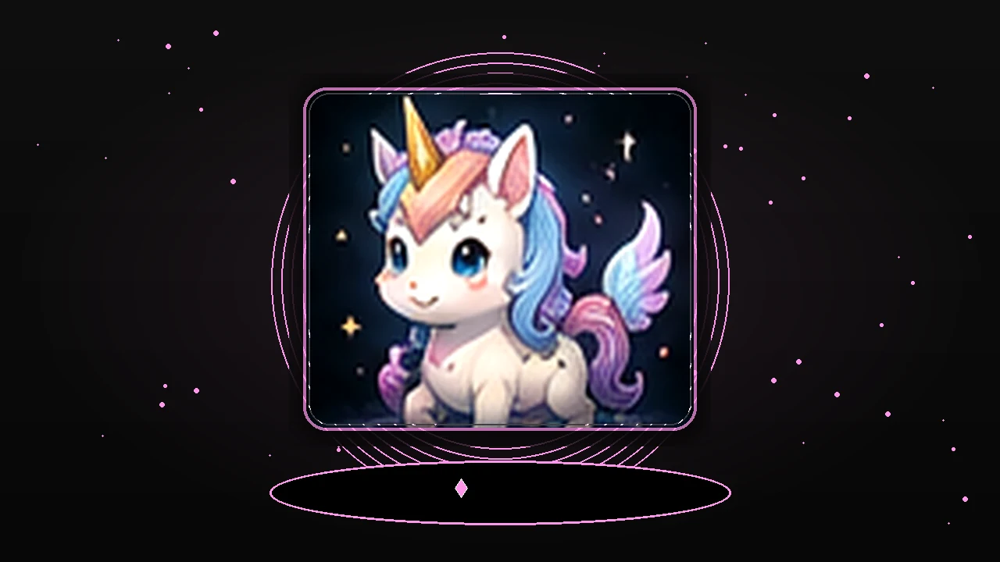
일부 동행 펫이 승리 칩을 소폭 늘리거나 손실 일부를 환급합니다. 결과 판정 자체를 뒤집지는 않습니다.

+0·+5·+10·+15·+20 단계가 한 화면에서 선명하게 비교되며, 전기·화염·공허·생체·방어·정밀·근접 계열은 서로 다른 효과를 사용합니다.
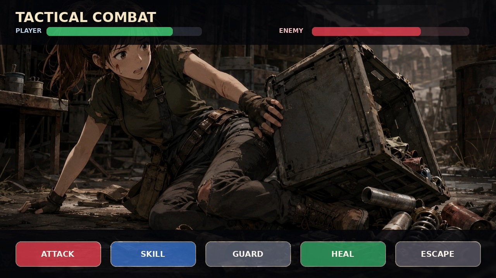
공격·기술·방어·응급·도주를 선택합니다. 기존 던전은 빠른 자동전투 모드로 유지됩니다.
!기지방어!기지방어공격!자원시장!기지칩교환!전투!던전전술!스토리 전투별도 실시간 피드 Web Service를 15초마다 확인합니다. 운영·보안·문의 내용은 공개하지 않고, 봇 상태와 강화 이정표·운영진 공개 공지만 표시합니다.
정적 ONLINE 신호가 활성화됐습니다. 공개 피드 API를 연결하면 서버·생존자·지연시간이 실시간 값으로 자동 전환됩니다.
카지노는 이미지 없이 결과 중심 UI로 정리하고, 기지는 단계별 외형과 고난도 자원 구조를 유지합니다.
슬롯·블랙잭·룰렛·바카라 결과는 이미지 없이 더 깔끔한 임베드로 표시됩니다.
일반 승리·대승·잭팟·패배·치명 실패의 결과 계산과 보상 로직은 그대로 유지됩니다.
연속 플레이 시 이미지 스팸 없이 결과와 잔액 변동을 빠르게 확인할 수 있습니다.

기본 생산 거점. 건설부터 기존보다 많은 생활 자원이 필요합니다.

첫 강화부터 30분의 실제 공사 시간이 적용됩니다.

중반부터 자원 요구량이 크게 뛰어 장기 채집과 투자가 필요합니다.

8시간 공사와 천 단위 생활 자원, 천만 단위 식량을 요구합니다.

최종 24시간 공사와 대규모 자원을 요구하는 최상위 생존 목표입니다.
!카지노!슬롯!블랙잭!룰렛!기지!기지건설!기지강화!기지수확!패치노트!명령어낚시·광산·코인·갈림길 탐색·긴급 지원이 각 결과에 맞는 별도 장면을 사용하며, 단순 상자 한 장을 반복하지 않습니다.
수변 성공·희귀 어종·줄 끊김·약탈자 보트·침수 보급 상자
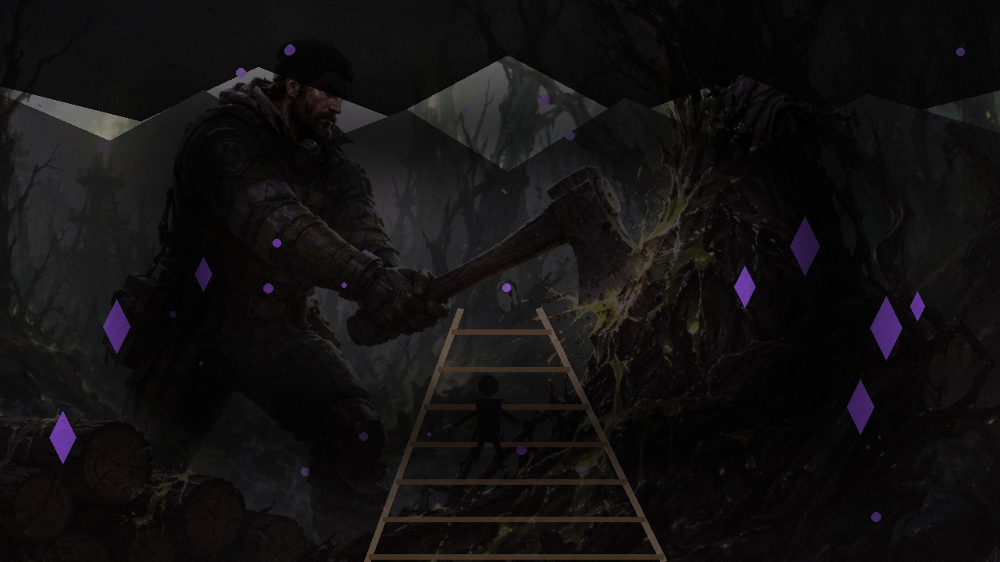
광맥 발견·희귀 결정·낙석·폐광 가스·지하 기계 동력핵
스캐너 해독·희귀 자산·위조 신호·보급함·매복과 와이어 덫
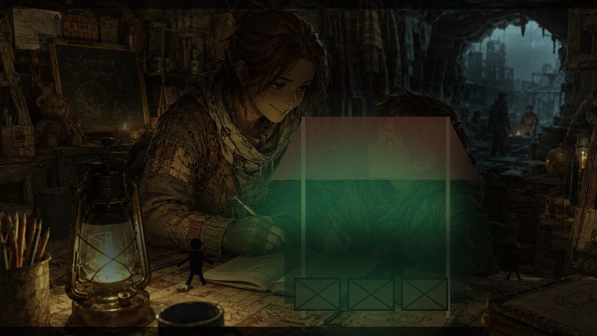
보급 담당자·암시장 상인·버려진 배급소·사기 거래·특별 지원 물자
!낚시!광산!코인!코인탐색!탐색!돈주세요기존 생존 동료 7종을 유지하고, 아바돈·다크프·루나냥 등 귀여운 신규 펫 12종을 더했습니다. 총 19종 모두 기본·1차·최종 진화 이미지를 사용합니다.
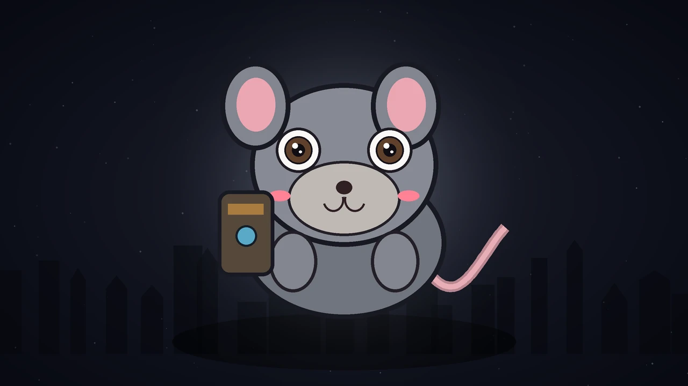
작은 생존 가방을 멘 수집 동료 · 철니 폐허쥐 · 군체의 왕
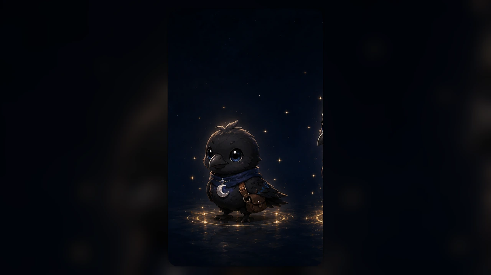
높은 곳에서 길을 찾는 정찰 동료 · 야간정찰 · 검은 감시자
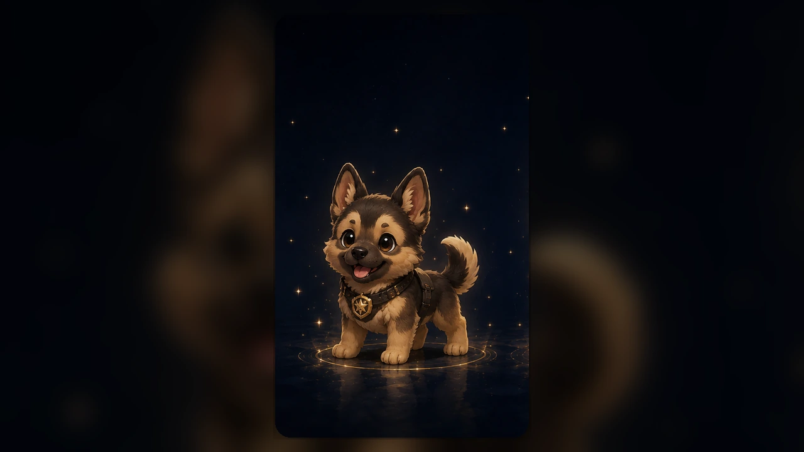
충직한 군견 동료 · 강화군견 제로 · 전쟁견 제로
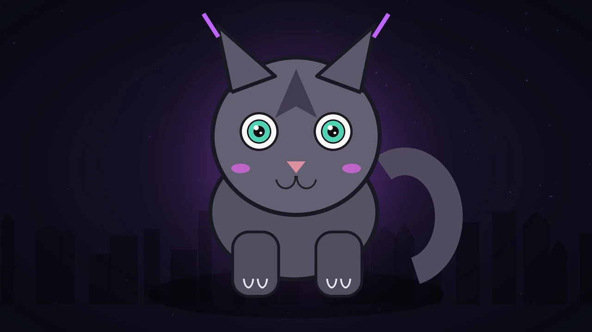
그림자처럼 움직이는 고양잇과 동료 · 그림자 살쾡이 · 야수왕
표정 화면이 있는 둥근 보급 드론 · 전투드론 · 오메가 드론
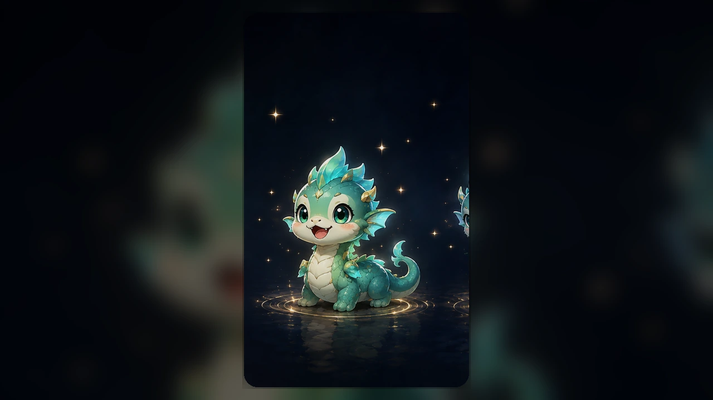
재생 에너지를 품은 아기 동료 · 삼두 하이드라 · 재생의 군주
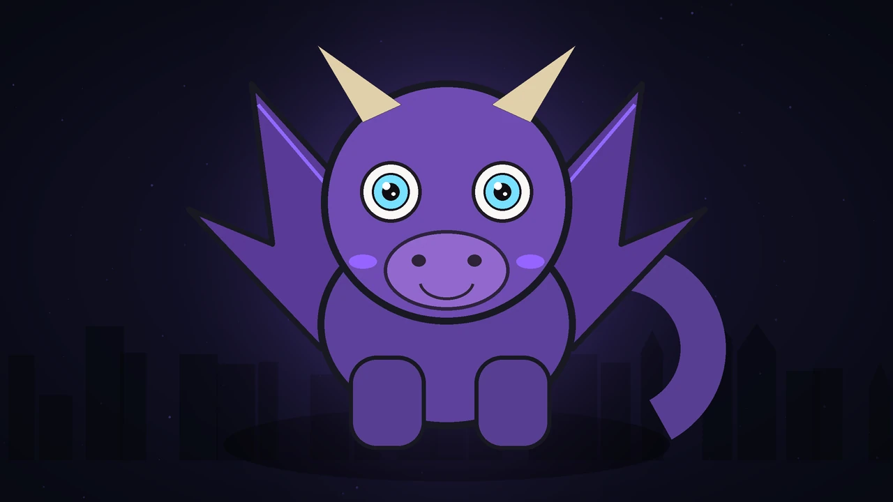
공간 에너지를 먹고 자라는 귀여운 용 · 공허의 비룡 · 차원룡
별빛 목걸이를 찬 복슬복슬한 강아지 동료. 곁에 있는 것만으로도 생존자의 마음을 안정시킵니다. · 성광 아바돈 · 천상의 아바돈
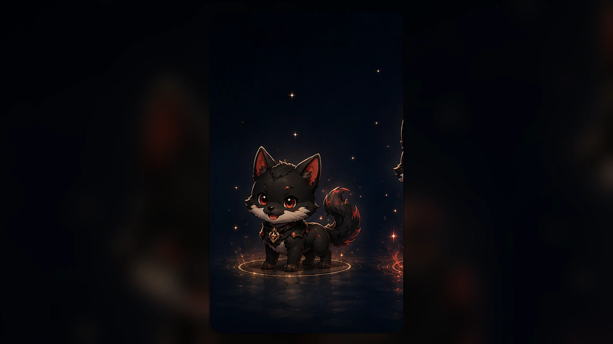
검은 털과 붉은 장식을 지닌 장난꾸러기 그림자 늑대. 위험을 먼저 감지합니다. · 그림자 다크프 · 심연왕 다크프
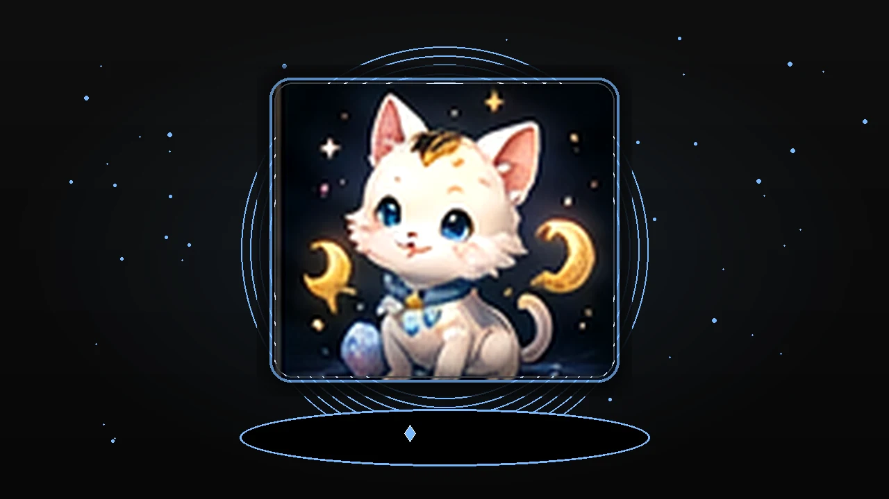
초승달 장식을 달고 다니는 새하얀 고양이. 어둠 속 작은 빈틈을 찾아냅니다. · 월광 루나냥 · 달의 여제 루나냥
꼬리 끝에 따뜻한 불꽃을 품은 아기 원숭이. 전투가 길어질수록 용기를 북돋습니다. · 화염 파이어몽 · 태양왕 파이어몽
눈송이처럼 포근한 흰 토끼. 차가운 기운으로 상처와 피로를 가라앉힙니다. · 설원 스노우씨 · 빙설의 수호자
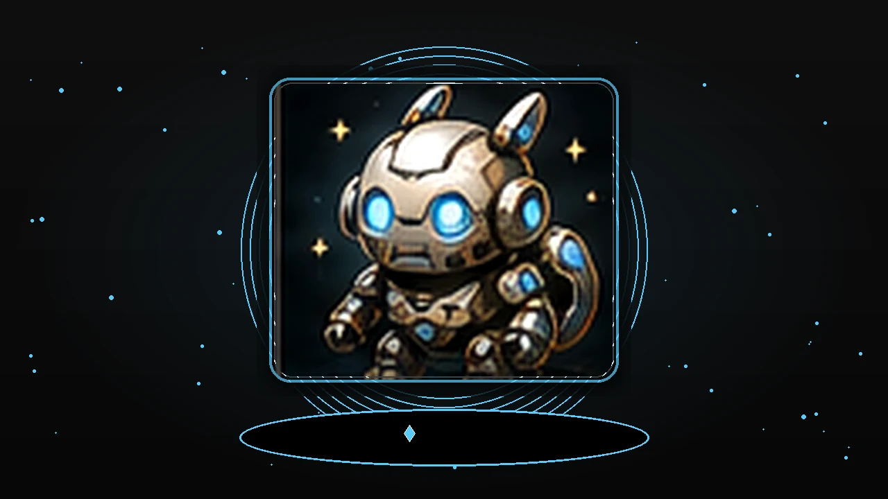
토끼 귀 안테나와 푸른 눈을 가진 소형 로봇. 보급품의 가치를 빠르게 분석합니다. · 강화 메카로보 · 오메가 메카로보
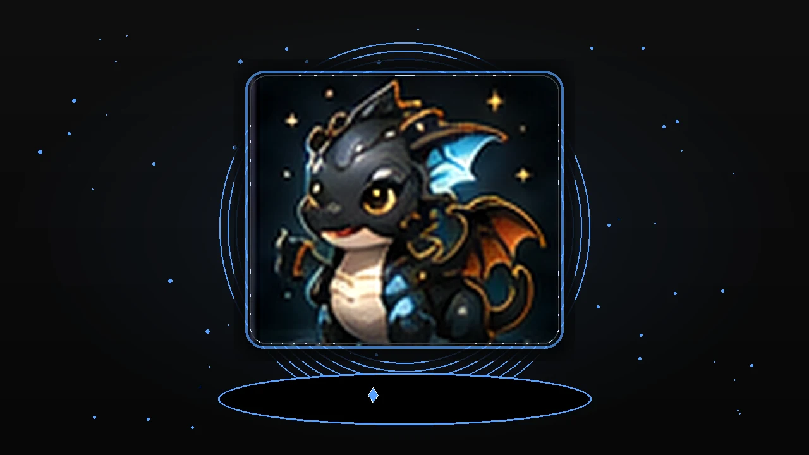
번개 날개를 가진 작고 씩씩한 용. 전장의 흐름을 읽고 강한 일격을 돕습니다. · 뇌광 썬더드래곤 · 폭풍룡
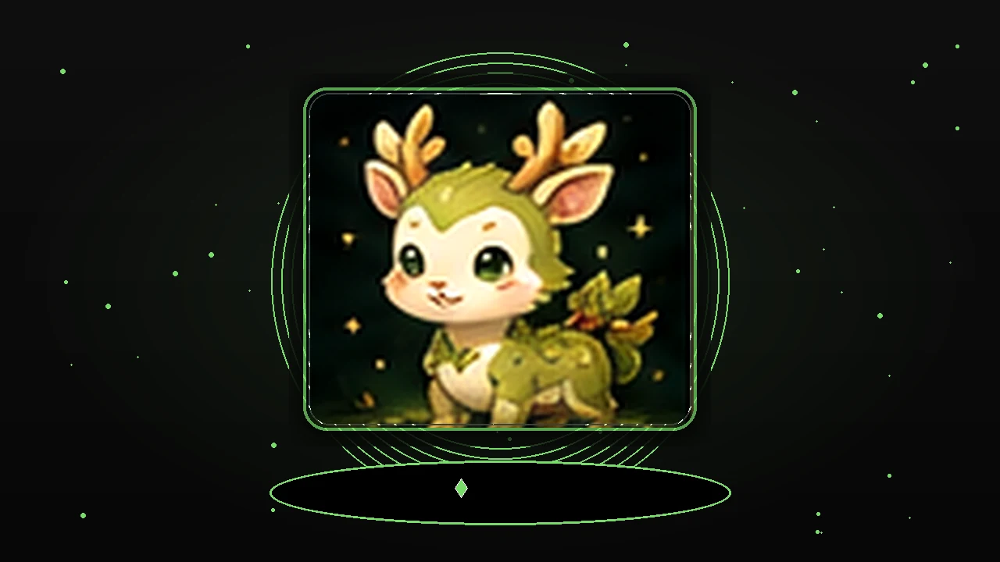
새싹 뿔과 잎사귀 꼬리를 가진 숲의 정령. 재료의 기운과 생명력을 감지합니다. · 숲의 포레스트 · 세계수의 정령
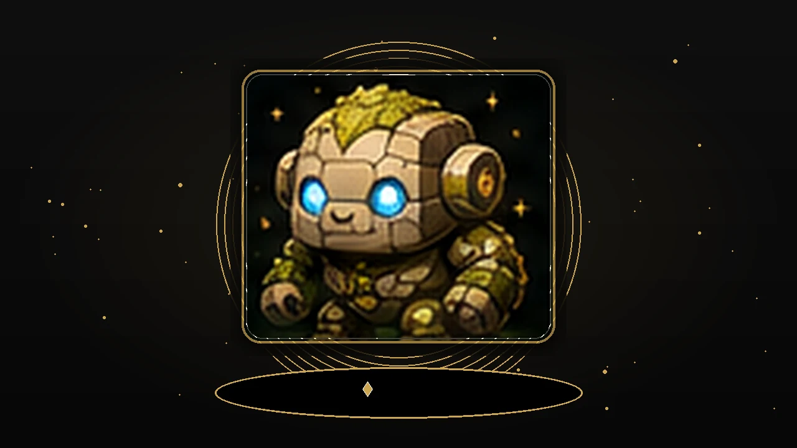
고대 석판과 푸른 핵으로 움직이는 작은 골렘. 단단한 몸으로 앞길을 지켜줍니다. · 강화 미니골렘 · 대지의 거신
무지갯빛 갈기와 별빛 뿔을 지닌 신비로운 동료. 생존자의 행운과 회복을 돕습니다. · 성휘 유니콘 · 별무리 유니콘
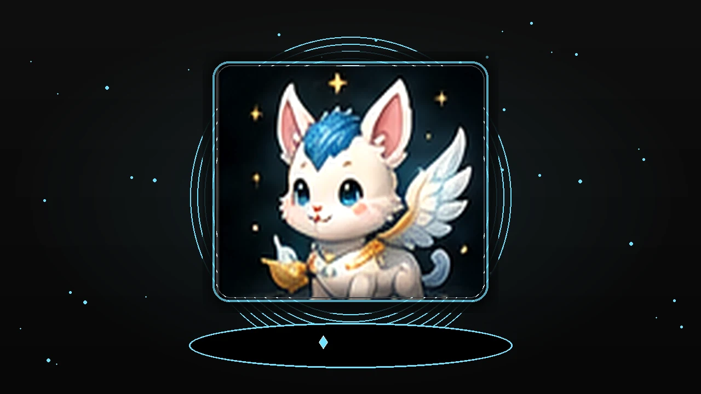
작은 날개와 얼음빛 장식을 가진 하늘의 전령. 빠른 움직임으로 위험과 보물을 먼저 찾습니다. · 천공 헤르메스 · 신속의 사자
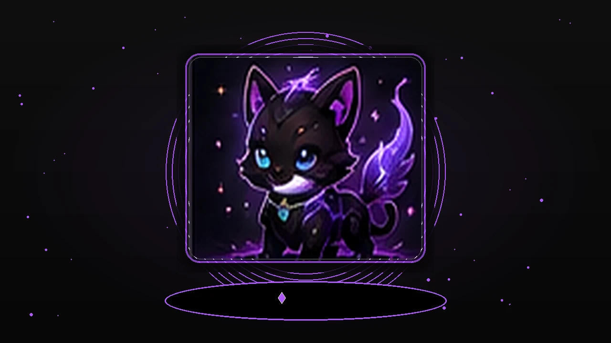
보랏빛 달 그림자를 두른 검은 고양이. 공허의 기운으로 탐색과 전투 전반을 증폭합니다. · 월영 네온문 · 공허월의 군주
!펫상점!펫정보!펫목록!펫장착!펫훈련!펫먹이!펫모험!펫진화장비 70종과 보물 20종의 이름별 이미지를 유지하면서 무기 종류별 강화 이펙트를 추가했습니다. !장비 드롭다운·검색·상세 카드는 그대로 사용할 수 있습니다.
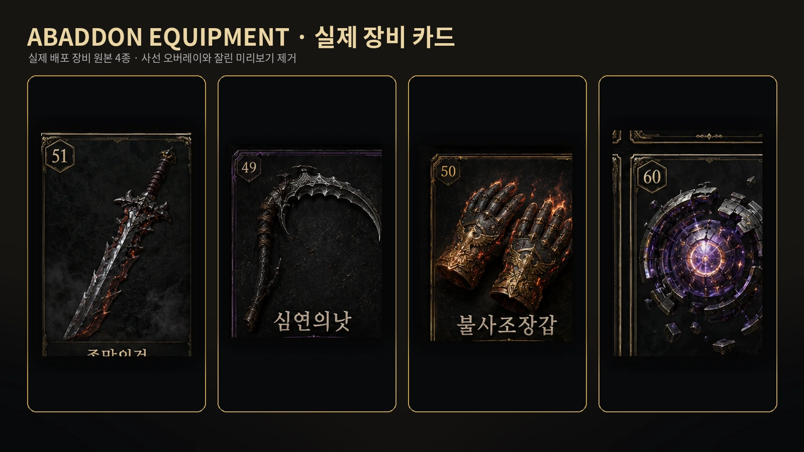
ITEM_DB의 실제 장비 이름·등급·설명·전투력에 맞춘 개별 카드
+0~+4는 원본 그대로, +5 이후부터 테두리·외곽 광점·속성 모서리 효과·초월 룬이 단계별로 확장
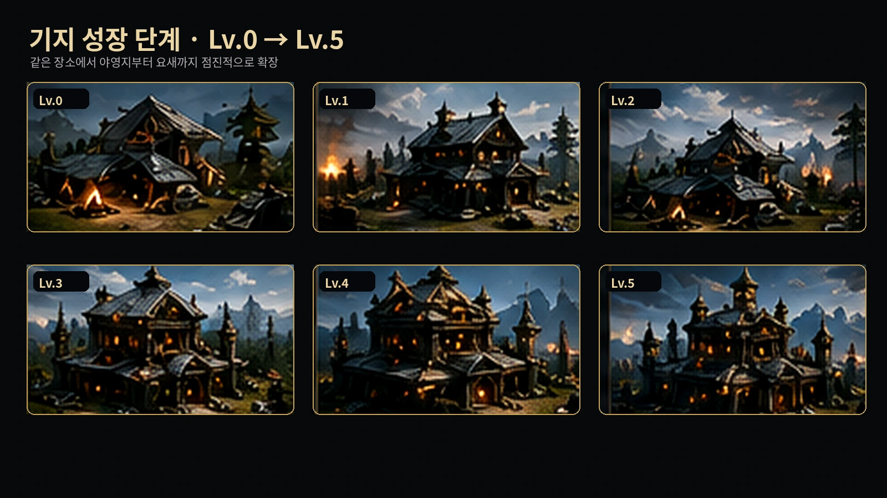
Lv.0 야영지부터 Lv.5 요새까지 같은 구도에서 성장 흐름을 비교
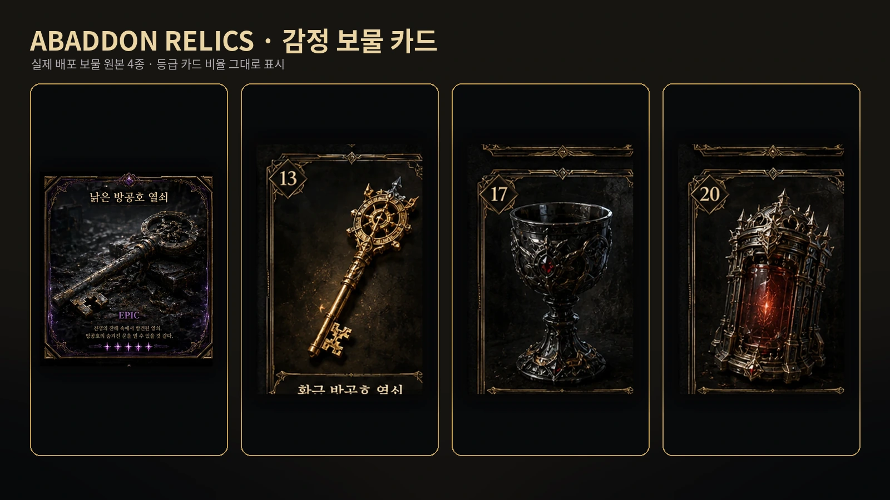
E~A 등급의 실제 감정 보물 이름에 맞는 이미지 표시
!장비!장착!감정!강화!장비외형!제작!보물감정구성원이 남긴 안전한 지식은 운영진 검수를 거쳐 아바돈의 새로운 대화 기록이 됩니다.
말 걸기를 선택하면 모달 대신 현재 채널에 연속 대화가 열립니다. 이후 평소처럼 채팅하거나 아바돈 답변에 답글을 달아 대화를 이어갑니다.
구성원은 모달로 질문과 답변을 제출하고 운영진은 최대 25개씩 승인·반려합니다. 운영진 등록은 즉시 승인되며 개인정보·토큰·초대 링크는 차단합니다.
매일 바뀌는 서버 질문, 생존 밸런스 투표, 응원과 한마디를 제공하며 대화·승인 기억·질문 참여로 사용자별 교감 기록을 쌓습니다.
채널 이름과 주제를 보고 25종 규칙 중 하나를 추천합니다. 여러 채널을 선택하면 채널마다 20초 간격으로 작성·고정하고, 기존 메시지는 중복 없이 갱신합니다.
고철·광석·식량·고대파편·미감정 보물과 굴착 잔돈을 항목별 임베드에 표시합니다. 진행률 연출 뒤 현재 보유량과 남은 횟수까지 한눈에 확인합니다.
돈주세요는 1분·하루 50회이며 정상 지원 뒤 특별 교섭 버튼이 랜덤 등장합니다. 성공 시 기본 지원과 별도로 5,000~20,000 식량을 받습니다. 낚시·광산은 각각 독립 2분입니다.
검은 주파수와 백색 방주의 선택을 계승하는 시즌 3 캠페인과 4개의 신규 엔딩을 드롭다운으로 진행합니다.
Discord 연결, 데이터 파일, TTS, 서버 리뉴얼, 슬래시 명령, 홈페이지 피드와 봇 권한을 드롭다운으로 점검합니다.
TTS 채널·엔진·기본 목소리, 환영 안내, 운영 로그, 자동 이모지와 공개 피드를 명령 하나에서 관리합니다.
일반 사용자가 자신의 음성을 드롭다운으로 선택하며 다른 사람이나 서버 기본값은 변경하지 않습니다.
음성방에 들어간 상태에서 음성을 시험하고, 개인 설정을 초기화해 서버 기본값으로 돌아갈 수 있습니다.
환영 메시지에 공지사항·서버 기본규칙·가입 채널을 연결하고 `!가입 생존자` 시작법을 안내합니다.
TTS 채팅방의 메시지를 작성자의 음성방에서 읽되, 닉네임은 생략하고 채팅 내용만 낭독합니다. discord.py 2.7용 음성 런타임도 유지합니다.
명령 하나로 테마 미리보기·안전 계획·수동 백업·복구·빈 카테고리 정리를 선택합니다.
봇 상태와 공개 강화·공지 이벤트가 별도 피드 서비스에서 홈페이지로 안전하게 흐릅니다.
음성 성역과 정돈된 서버 메뉴를 공식 Discord에서 직접 확인하세요.
지뢰찾기는 총액과 순손익을 분리하고, 선물거래는 실시간 이모지 차트로 움직입니다. 서버 레이스는 참가 버튼을 누른 사람만 출전합니다.
현재 보유 칩·현금화 총액·얻은 돈·잃은 돈을 결과 화면에서 바로 구분합니다.
롱·숏 진입 후 16틱 차트와 미실현 손익을 보며 수동 또는 자동 청산합니다.
버튼 반응속도와 잠깐 표시되는 이모지 배열을 이용한 접근성 높은 개인 게임입니다.
참가 버튼으로 인원을 모집하고 방장이 확정한 뒤, 이모지 효과가 흐르는 서버 레이스를 시작합니다.
!미니게임!지뢰찾기!선물거래!반응속도!기억회로!생존자레이스!테스트 상세